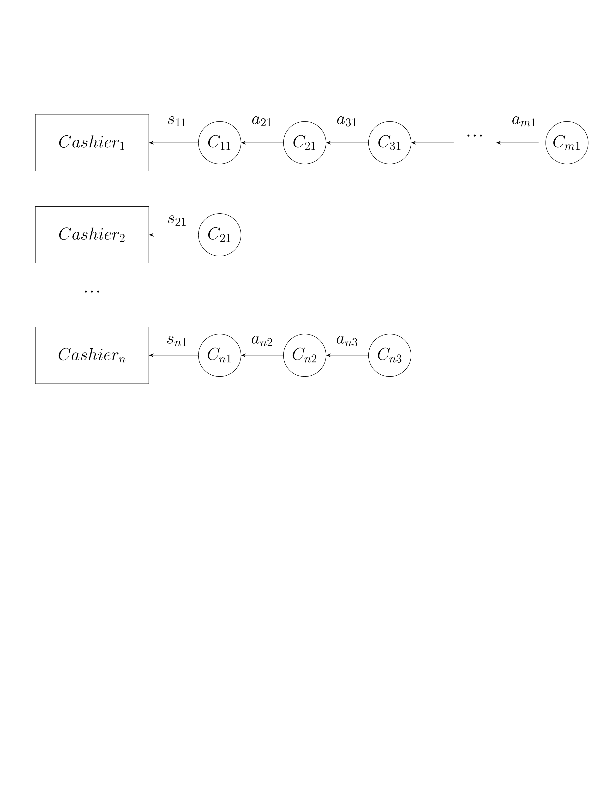
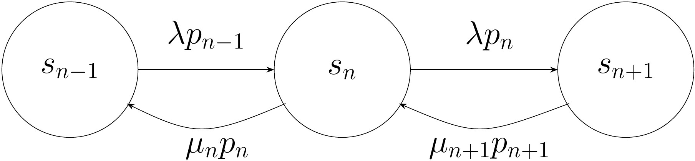

1 Introduction
Simulation and optimization approaches are present in our everyday lives, albeit most of the time operating in a background plane. For example, when navigating with a GPS, the system simulates different routes and optimizes for the shortest or fastest path. Similarly, supply chains use optimization algorithms to minimize costs and maximize efficiency, while simulations help predict demand and manage inventory. These techniques are fundamental tools in decision-making processes across various industries, from transportation and logistics to finance and healthcare.
But what do simulation and optimization approaches have in common, apart from being complementary tools? The answer lies in the concept of a model. In the context of machine learning, we normally refer to a model as a mathematical or computational representation that captures the relationships between input data and output predictions. In simulation and optimization, a model similarly serves as an abstraction of a real-world system or process, allowing us to analyze, predict, and improve its behavior through experimentation and algorithmic techniques.
In the following, we will delve deeper into the concept of a model and how models are used in simulation and optimization contexts using some practical examples.
1.1 Simulating supermarket dynamics
Imagine you are in your favourite grocery store waiting at the checkout queue. For simplicity, let’s assume there is only one open counter. When you arrive at the queue, there might be other customers already waiting, while the first customer at the queue is currently being served. Shortly after you, a new customer arrives, taking the next free spot right behind you. And then another customer arrives, and another one, and another one…
Let’s try to break down how this system behaves and what are the most important interactions between the parts of the system. In general, we will distinguish between components, states, events, inputs and metrics.
- Components: These are the entities that interact with each other. In our example, we have customers, cashiers and the queue itself.
- States: The configurations of the system that represent valid combinations of specific properties of the components at a given moment of time. For instance, at each time the queue has a specific length: zero if it’s empty, one customer, two customers, etc. Additionally, the cashier can be busy or idle. We can also count the number of customers currently present in the supermarket which have not yet arrive at the checkout queue.
- Events: The interactions themselves, like a new customer arriving at the queue, checkout start or checkout completion.
- Inputs: Whatever information is fed into the system, e.g. arrival times, service times, etc. These inputs can contain statistical assumptions, like the distribution of arrival times.
- Metrics: How we evaluate the system as a whole in a given time step. For instance, what is the average waiting time? How much time are the cashiers busy? How is the queue length distributed?
The system could be represented by the following Python code as a minimal variant.
import heapq, random
# event = (time, type, customer_id)
event_list = []
heapq.heappush(event_list, (first_arrival_time, 'arrival', 1))
while event_list and time < sim_end:
time, ev_type, cid = heapq.heappop(event_list)
if ev_type == 'arrival':
if any_cashier_free():
start_checkout(cid, time)
heapq.heappush(event_list, (time + service_time(cid), 'departure', cid))
else:
enqueue(cid, time)
heapq.heappush(event_list, (time + next_interarrival(), 'arrival', next_id()))
elif ev_type == 'departure':
finish_service(cid, time)
if queue_not_empty():
next_cid = dequeue()
start_service(next_cid, time)
heapq.heappush(event_list, (time + service_time(next_cid), 'departure', next_cid))This code assumes that customers arrive at regular subsequent intervals after each arrival event. The parameter sim_end defines how long (how many steps) we want to simulate in this case. The function service_time returns the time the cashier needs for checking out customer cid. The next customer will arrive after a time given by the function next_interarrival, which can implement different stochastic behaviours.
We can represent this system graphically as shown in the following illustration:

In this figure, customers are denoted by \(r_i\), the amount of cashiers is \(c\) and the total number of customers in the supermarket at time \(t\) is denoted by \(N(t)\).
Now let’s try to refine the dynamics of this system. We will now write some equations to describe the system’ dynamics according to the infinite waiting room \(M/M/c\) model. Let’s make the following assumptions:
- Arrivals follow a Poisson distribution with mean \(\lambda\) (arrivals per second), which for this case will be assumed to be stationary.
- The service times are assumed to be exponentially distributed with mean \(1/\mu\).
What would be now the traffic intensity per cashier? That is, what is the mean customer flow that each cashier experiences from their own point of view? Let’s call this number \(\rho\) and calculate it as follows:
\[ \rho=\frac{\lambda}{c\mu} \]
In words, if customers arrive at a rate of \(\lambda=10\) customers/s and each cashier serves 2 customers/s (yes, it’s a fast supermarket). With 5 cashiers, that means that \(\rho=10/5\times 2=1\). This means that each cashier has quite a lot to do right now.
We are now interested in the probabilities of the states in this systems. In this case, we define a system by the number of customers currently present in the supermarket. So we can have \(N=1\) if there is currently 1 customer present, or any other number of customers (we assume the supermarket is so large, we can accomodate any number of them). Let’s denote these probabilities by \(p_n=\operatorname{Pr}\{N=n\}\). We have:
\[ p_n=\lim_{t\rightarrow\infty}\int_{0}^t \mathbb{1}_{\{N(s)=n\}} ds \]
Intuitively, \(p_n\) represents the fraction of time where the supermarket has exactly \(n\) customers. As mentioned earlier, we will assume that arrivals do not depend of the current state \(n\), so we write \(\lambda_n=\lambda\) for all \(n\ge 0\). However, note that the completion rates \(\mu_n\) do indeed depend of the current state. To see this, imagine that there is only one customer in the supermarket (\(n=1\)). The completion rate is then \(\mu_1=\mu\) since the only one cashier is needed to perform checkout. However, if there are \(n=2\) customers in the supermarket, two cashiers can serve those two customers in parallel, increasing the completion rate to \(\mu_2 = 2\mu\). The same reasoning applies until \(n=c\), the total number of cashiers. In this case, \(\mu_c=c\mu\) and the next customer will have to wait in the queue. So we have:
\[ \begin{align} \lambda_n&=\lambda \text{ for all } n\ge 0 \\ \mu_n&=\operatorname{min}(n,c)\mu \end{align} \]
Now we are going to state our main modeling assumption. Consider how we transition between states. Specifically, we transition from state \(n\) to state \(n+1\) when a new customer enters the supermarket, and there were already \(n\) customers in it. Similarly, we transition from state \(n\) to state \(n-1\) when a customer leaves the supermarket (in this case, all customers are served by the cashiers, so there is no way you leave the supermarket without paying first). Remember that the rate of customers arriving at the supermarket is always \(\lambda\), and the rate of customers being served (i.e. leaving) when at state \(n\) is \(\mu_n\). In general, for each state we can define an incoming and an outgoing flow. This quantifies the transitions in resp. out of a given state.

As can be seen in the previous figure, transitions flow away from state \(n\) in two ways: first, to state \(n-1\) when a customer is served with a rate \(\mu_n p_n\) and to state \(n+1\) when a new customer arrives with a rate \(\lambda p_n\). Similarly, one can transition from the other states to state \(n\) either by having a customer served in state \(n+1\) with a rate \(\mu_{n+1}p_{n+1}\) or when being in state \(n-1\) and a new customer arrives with a rate \(\lambda p_{n-1}\). Our modeling assumption now is that, for each state \(n\), the flow outwards balances out with the flow inwards:
\[ \lambda p_{n-1} + \mu_{n+1}p_{n+1} = \lambda p_n + \mu_n p_n\text{, for }n\ge 1 \]